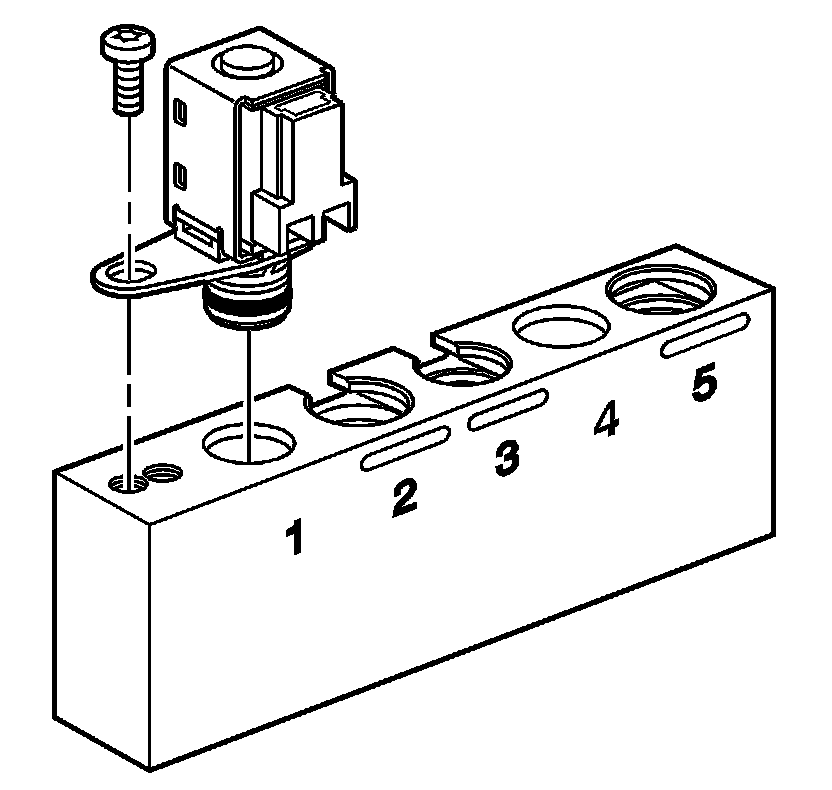
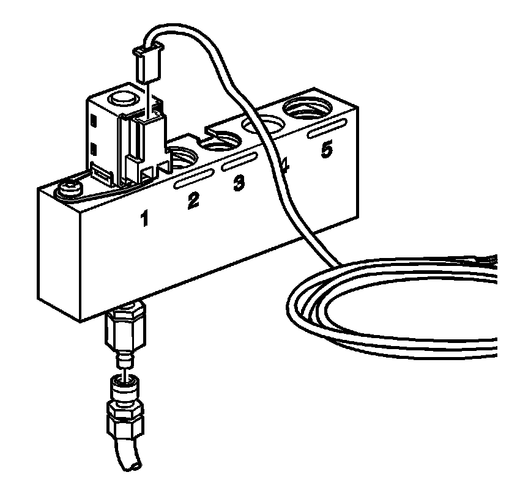

Shift Solenoid Leak Test
Shift Solenoid Leak Test
Tools Required
J 44246 Solenoid Testing Kit
Important:
^ This procedure tests On/Off type solenoid valves.
^ Visually inspect the physical condition of the solenoid before testing. Inspect the O-rings before and after the test to be sure that they are not cut or damaged.
Remove the solenoid from the control valve body. Refer to Valve Body and Pressure Switch Replacement.

1. Install the 1-2 shift solenoid valve or the 2-3 shift solenoid valve into bore number 1 of the J 44246 and install the factory bolt to retain the solenoid.

2. Connect the solenoid testing harness supplied with the J 44246 to the solenoid.
Important: Do not use air pressure in excess of 827 kPa (120 psi). Excessive pressure will not allow the solenoid ball check valve to seat properly. Recommended air pressure is 345 kPa (50 psi).
3. Apply compressed air to the J 44246.
4. Air should flow through the solenoid. If air does not flow through the solenoid, replace the solenoid. Refer to Valve Body and Pressure Switch Replacement.
5. Connect the solenoid testing harness to the 12 volt positive and negative (-) battery terminals.
6. Observe if the solenoid is operating electrically. An audible clicking noise can be heard when connecting or disconnecting power.
Important:
^ All solenoids need to be energized to seal.
^ A small amount of air leakage is normal ± 21 kPa (± 3 psi).
Observe the air flow through the solenoid. The flow will completely or nearly completely stop. Replace the solenoid if there continues to be an obvious air leak when the solenoid is energized.
Important: Inspect the O-rings after the test to be sure that they are not cut or damaged.
7. Install the solenoid into the control valve body. Refer to Valve Body and Pressure Switch Replacement.